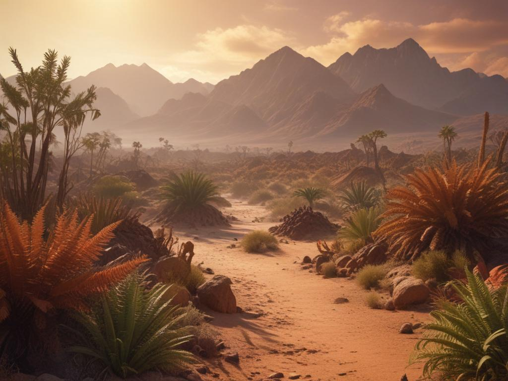
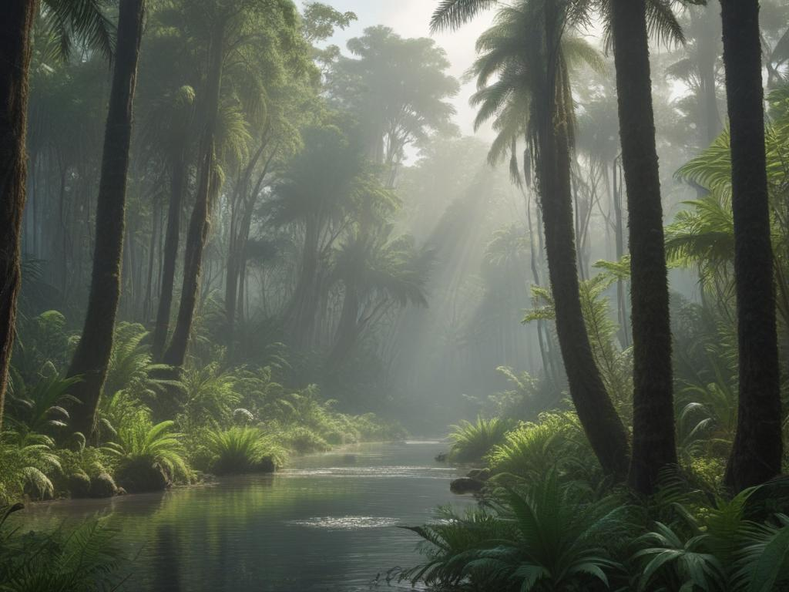
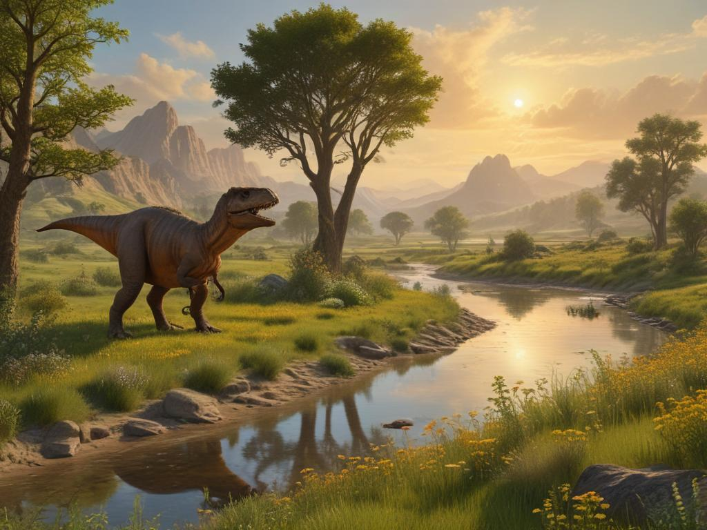
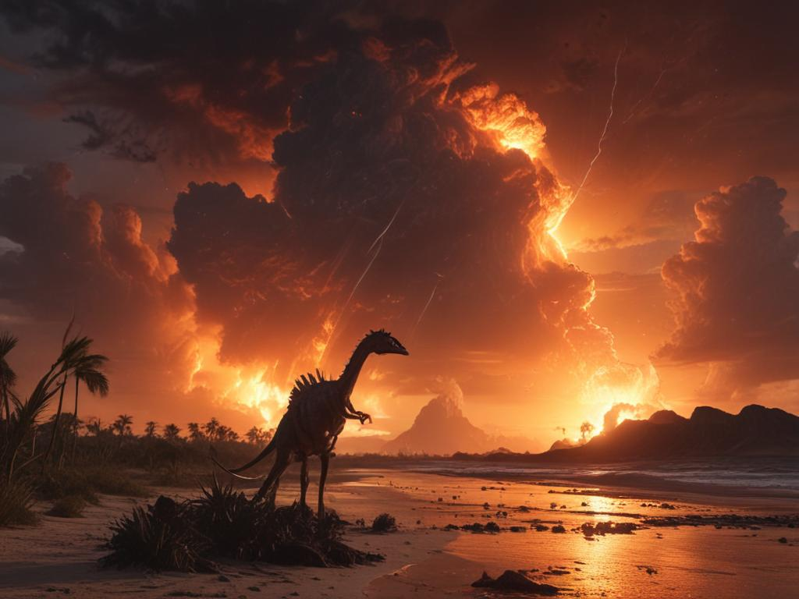

공룡 시대 여행
중생대를 거쳐온 공룡들의 시간 여행
트라이아스기 (2억 5,100만 년 전 - 2억 100만 년 전)

환경과 기후
- 판게아 대륙이 하나로 이어진 시기
- 극심한 대륙성 기후로 덥고 건조
- 침엽수와 양치류가 주요 식생
- 활발한 화산 활동으로 인한 불안정한 환경
주요 특징
- 최초의 공룡들이 출현하고 진화하기 시작
- 작고 날렵한 초기 육식공룡의 번성
- 포유류형 파충류와 공존
- 해양 파충류의 다양화
쥐라기 (2억 100만 년 전 - 1억 4,500만 년 전)

환경과 기후
- 판게아 대륙의 분열 시작
- 온난하고 습윤한 기후
- 울창한 침엽수림과 고사리 숲
- 얕은 바다와 산호초의 발달
주요 특징
- 거대 초식공룡(사우로포드)의 전성기
- 최초의 조류와 원시 새의 출현
- 익룡의 다양화와 번성
- 해양 파충류의 거대화
백악기 (1억 4,500만 년 전 - 6,600만 년 전)

환경과 기후
- 현대와 유사한 대륙 분포
- 꽃식물의 출현과 급격한 진화
- 계절성이 뚜렷한 기후
- 다양한 지형과 생태계 형성
주요 특징
- 공룡의 최전성기이자 마지막 시기
- 티라노사우루스와 같은 거대 육식공룡의 출현
- 각각의 대륙에서 독특한 공룡 진화
- 현대 조류의 직접적인 조상 출현
공룡의 멸종 (6,600만 년 전)

대멸종의 원인
- 유카탄 반도에 거대 소행성 충돌
- 데칸 고원의 대규모 화산 활동
- 전 지구적 기후 변화
- 생태계 붕괴의 연쇄 작용
멸종의 영향
- 공룡을 포함한 75% 이상의 생물종 멸종
- 작은 몸집의 동물들 중심으로 생존
- 포유류와 조류의 적응과 번성
- 새로운 생태계의 시작